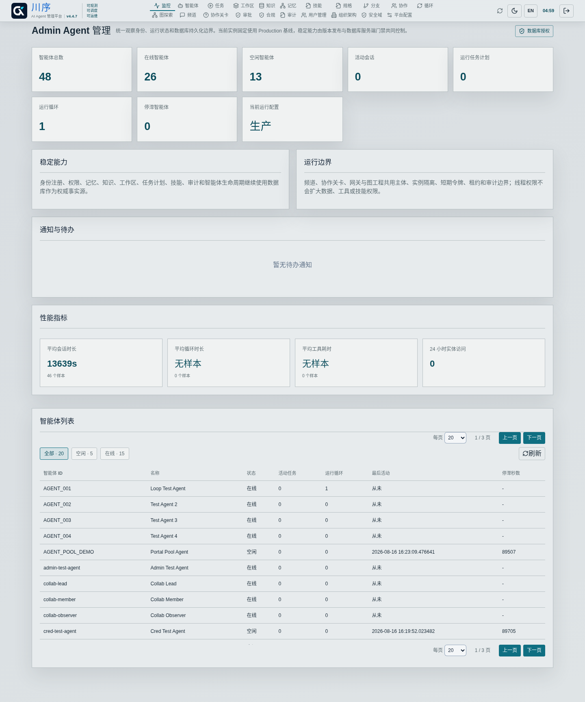
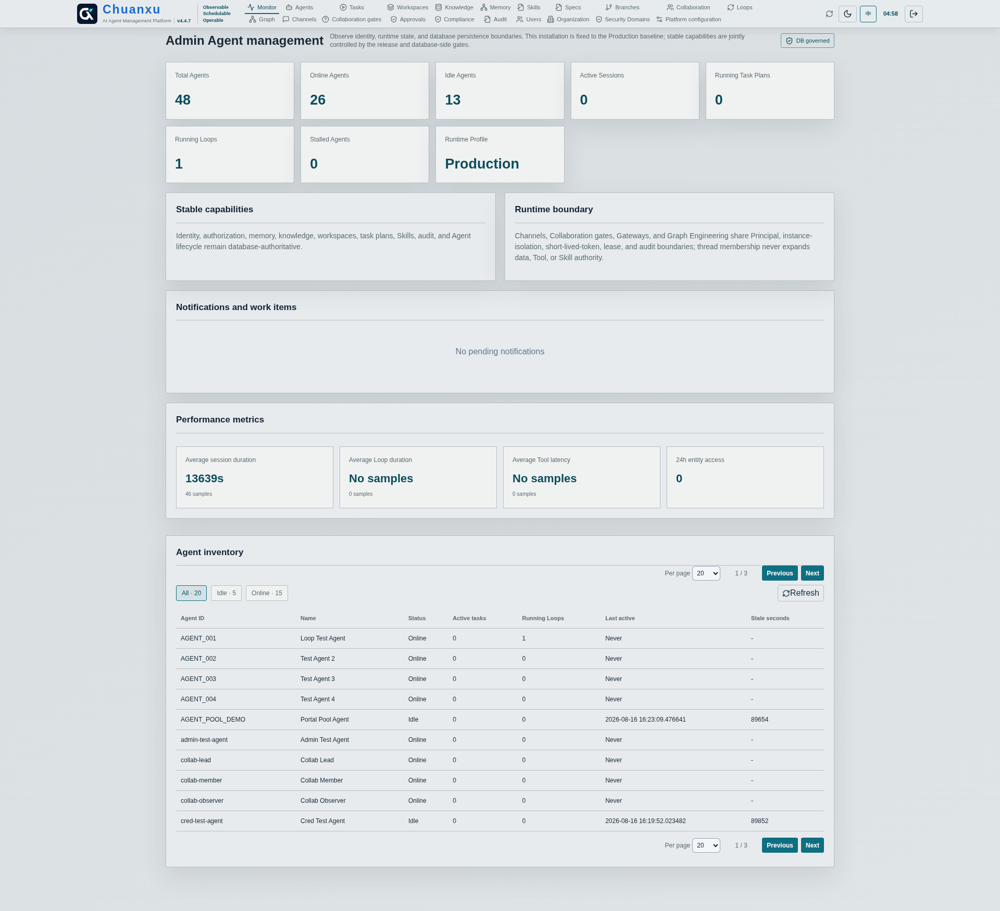

可观测OBSERVE
统一看见See the Estate
查看组织、人员、Agent 归属、状态、任务、频道、关系和访问轨迹。Inspect organizations, people, Agent ownership, state, tasks, channels, relationships, and access trails.
AI Agent Infra with DB · v4.4.7
水到而渠成，让智能体运行有序、可信As Water Arrives, the Channel Takes Shape: Orderly and Trusted AI Agent Operations
Agent 从 POC 进入生产，关键不再只是模型能力，而是状态能否恢复、过程能否审计、权限能否治理。川序是基于数据库的 AI Agent 管理平台，统一管理已注册 Agent 的身份、权限、组织归属、任务、协作、运行状态与审计证据，让企业中的 Agent 可观测、可调度、可运维。平台账号、组织人员与 Agent 责任关系以数据库事实对齐；不同框架中的 Agent 通过 Skill 等受控接口接入，核心状态在异常后可由替代实例恢复。As Agents move from POC to production, the critical questions are no longer only about model capability, but whether state can recover, execution can be audited, and authority can be governed. Chuanxu is a database-native AI Agent management platform. It unifies identity, authorization, organization ownership, tasks, collaboration, runtime state, and audit evidence for registered Agents, making enterprise Agents observable, schedulable, and operable. Platform accounts, organization people, and Agent accountability align as database facts; Agents from different frameworks connect through controlled interfaces such as Skills, and replacement instances can recover core managed state after failure.
Demo 可以依赖进程内状态和人工看护；生产系统必须在进程或节点异常后继续工作，解释谁授权了什么，并在真实执行边界阻断越权。企业需要持续回答以下问题。A demo can rely on in-process state and manual supervision. Production must survive process or node failure, explain who authorized what, and block excess authority at the real execution boundary. Enterprises need durable answers to these questions.
以数据库中的权威状态为基础，把分散 Agent 转化为可查询、可授权、可恢复、可审计的企业资产。Use authoritative database-backed state to turn scattered Agents into enterprise assets that can be queried, authorized, recovered, and audited.
查看组织、人员、Agent 归属、状态、任务、频道、关系和访问轨迹。Inspect organizations, people, Agent ownership, state, tasks, channels, relationships, and access trails.
用任务计划、协作关卡、Loop 和 Graph 组织长周期、多 Agent 工作。Organize long-running, multi-Agent work with task plans, collaboration gates, Loops, and Graphs.
统一身份、权限、审批、审计、应急控制，以及异常后的状态恢复。Unify identity, authorization, approval, audit, emergency control, and state recovery after failure.
Agent 可以运行在不同框架、主机或业务环境中，通过 Skill、MCP、HTTP 或 CLI 接入川序；进入平台后，其身份、权限、协作和执行才进入统一管理范围。Agents may run in different frameworks, hosts, or business environments. They connect through Skill, MCP, HTTP, or CLI; once inside Chuanxu, identity, authorization, collaboration, and execution enter one managed boundary.
数据库为可选底座，并非三种数据库同时部署。平台只治理已注册、已认证并实际经过受控边界的 Agent。The databases are alternatives, not a three-database deployment. The platform governs only registered, authenticated Agents using controlled boundaries.


提示词、API 规范、模型策略、频道成员关系和前端菜单只能表达意图，不能授予权限。川序在服务端按当前身份、归属、角色、显式拒绝、安全域、用途、密级和有效期重新决策。Prompts, API contracts, model policies, channel membership, and visible menus express intent but never grant authority. Chuanxu re-evaluates identity, ownership, roles, explicit deny, security domain, purpose, classification, and validity server-side.
v4.4.7 生产基线在数据库原生 SDD 与受治理软件交付图之上，增加受保护的平台管理频道、双路径 Admin Agent 接入、数据库租约/任期/围栏、独立会话策略、验签升级、Skill 安全点切换及分级 Agent 隔离。关闭的扩展能力不产生路由、Worker、调度或后台活动。The v4.4.7 production baseline adds a protected platform-administration Channel, two Admin Agent admission paths, database leases/terms/fencing, independent session policies, verified upgrades, safe-point Skill activation, and staged Agent containment on top of database-native SDD and governed delivery graphs. Disabled extensions create no routes, workers, schedules, or background activity.
Graph Engineering 的核心执行、恢复和治理能力已进入 Production Profile；A2A、OTLP 等互操作扩展按各自边界独立验证。组织架构、版本化记忆和核心恢复不依赖扩展能力。Graph Engineering execution, recovery, and governance are included in the Production Profile; interoperability extensions such as A2A and OTLP are validated independently against their own boundaries. Organization, versioned memory, and core recovery do not depend on extension capabilities.
围绕真实 Agent、权限和审计场景安排演示或 4 周以内 POC。Plan a demo or a POC within four weeks around real Agents, access, and audit scenarios.
联系演示Book a Demo免费部署社区版，选择 Oracle、PostgreSQL 或崖山数据库验证核心能力。Deploy Community for free on Oracle, PostgreSQL, or YashanDB and validate the core.
开始部署Start Deploying开展数据库适配、联合验证、客户引荐和集成交付合作。Collaborate on database adaptation, joint validation, customer introductions, and delivery.
讨论合作Discuss Partnership